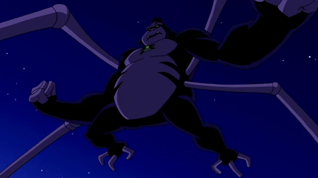

Espécie
Nome: Arachnachimp
Corpo semelhante a um macaco azul com quatro braços e duas pernas. Possui quatro olhos e uma cauda que
dispara teias. Mistura agilidade de primata com habilidades de aracnídeo. Os Arachnachimps são ágeis e
adaptados para viver nas árvores. Os Arachnachimps vivem em colônias nas copas das árvores, longe do solo
perigoso. Usam suas teias para construir estruturas suspensas e se locomover rapidamente entre as árvores. A
sobrevivência depende da cooperação entre membros da colônia, já que os predadores são numerosos.
Planeta
Nome: Aranhascimmia (também conhecido como Arácna)
O planeta é coberto por vegetação abundante, com árvores gigantes que formam um ecossistema vertical. Do
espaço, Aranhascimmia tem coloração verde-limão com manchas escuras; no solo, o céu é roxo devido à composição
atmosférica. É considerado um planeta hostil, cheio de predadores como os Tubarões de Raiz, que caçam os
Arachnachimps, tornando a vida no planeta uma luta constante pela sobrevivência. Em alguns momentos da
história, o planeta foi invadido por Xenocitas, que transformaram os habitantes em DNAliens, quase levando os
Arachnachimps à extinção.
Poderes e Habilidades
Disparo de teia
Sua cauda funciona como um lançador de teias, capazes de prender inimigos, criar redes e balançar entre
estruturas. As teias são resistentes como aço, podendo suportar grandes pesos. Pode usá-las de forma criativa:
como projéteis pegajosos, cordas de contenção ou até trampolins improvisados.
Agilidade aprimorada
Movimentos acrobáticos semelhantes aos de um macaco, com saltos longos e escaladas rápidas. Consegue se
locomover em ambientes verticais com facilidade, como paredes e árvores. Ideal para combates em locais
fechados ou cheios de obstáculos.
Força e reflexos
Apesar do porte pequeno, possui força acima da média, capaz de enfrentar inimigos maiores. Reflexos rápidos
que o tornam difícil de atingir em combate. Usa a combinação de força e agilidade para ataques surpresa.
Sentidos aguçados
Audição e visão superiores, permitindo detectar inimigos escondidos ou em movimento. Seus quatro olhos
ampliam o campo de visão, evitando ataques surpresa.
Fraquezas
Não é tão poderoso contra inimigos de grande porte ou blindados. Sem suas teias, perde parte de sua
versatilidade. Não aguenta ataques muito pesados ou prolongados.
Forma Suprema

pt-br.ben10.wikia.com
O corpo do Supremo lembra um gorila musculoso com pernas de aranha, tornando-o mais ameaçador que sua forma
original. Suas teias são muito mais grossas e resistentes que as do Macaco-Aranha normal. Pode criar redes
enormes para aprisionar inimigos ou se locomover com mais facilidade. Além dos quatro braços, ganha pernas
extras de aranha que aumentam sua mobilidade e capacidade de combate. Essas pernas também ajudam na escalada e
na aderência em superfícies. Seu corpo de gorila lhe dá força física muito maior, capaz de enfrentar inimigos
de grande porte. Sua resistência é muito superior, suportando ataques que derrotariam o Macaco-Aranha comum.
Pode se prender em paredes e tetos com facilidade, usando tanto braços quanto pernas extras. Apesar de mais
forte, sua massa maior pode reduzir a velocidade em algumas situações. Se suas pernas de aranha forem danificadas, perde grande parte da sua mobilidade.
Curiosidades
- Primeira aparição: Ben 10: Força Alienígena, episódio “Do que São Feitas as Garotinhas?”
- O nome Aranhascimmia vem da junção de “aranha” e “scimmia” (macaco, em italiano), refletindo a fusão das
duas criaturas que inspiraram a espécie.
- O planeta já apareceu em episódios de Ben 10: Supremacia Alienígena e em materiais derivados.